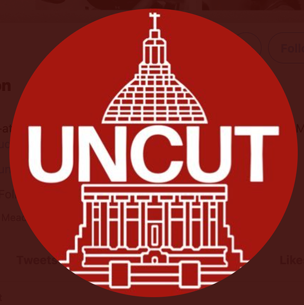
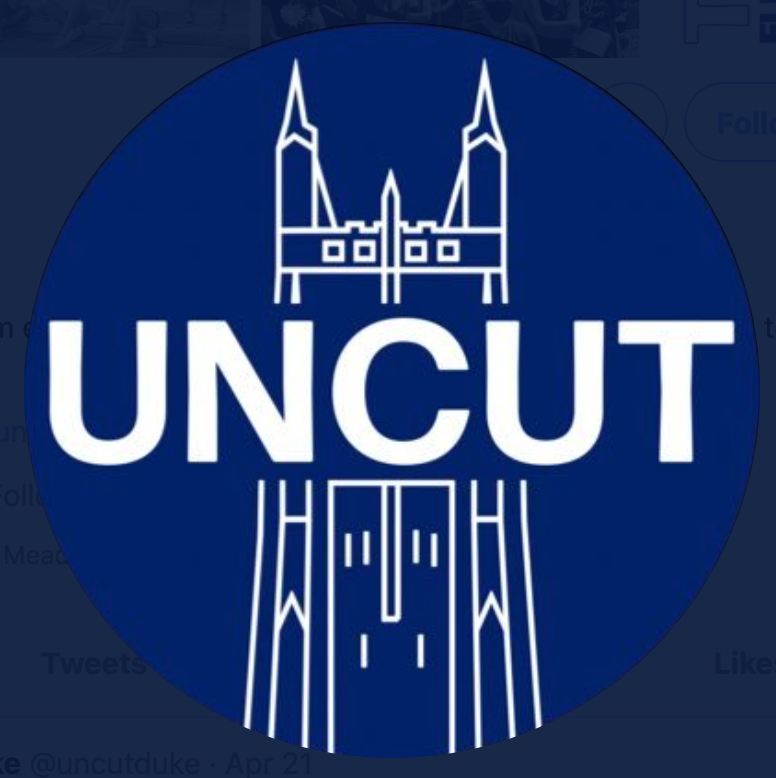
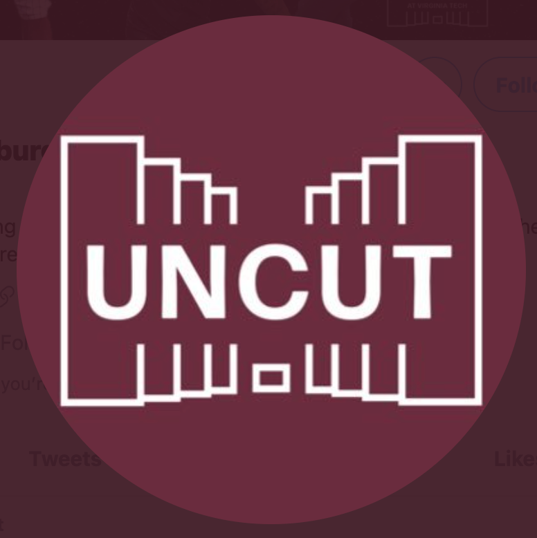
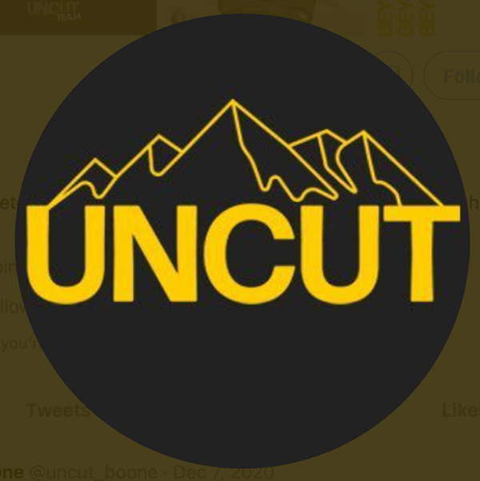
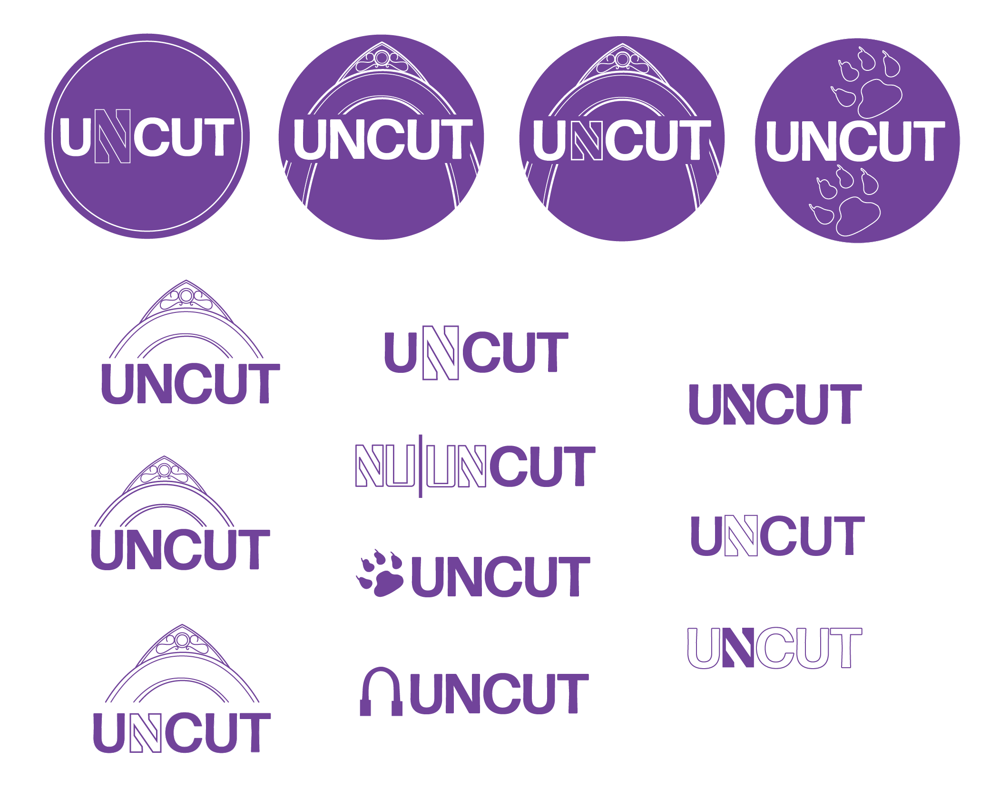
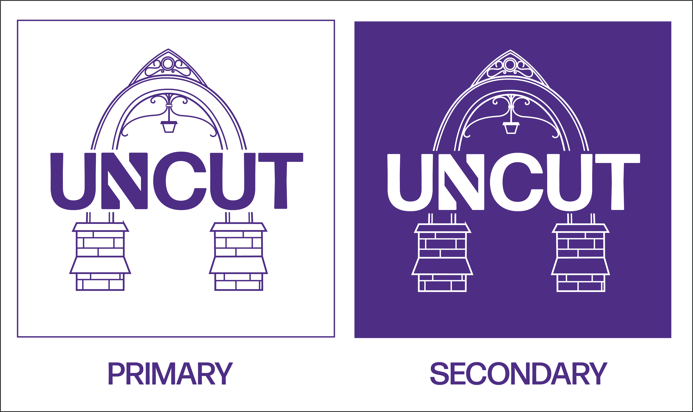
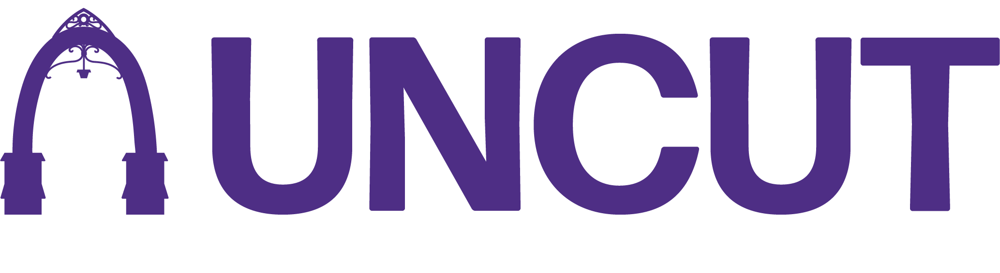
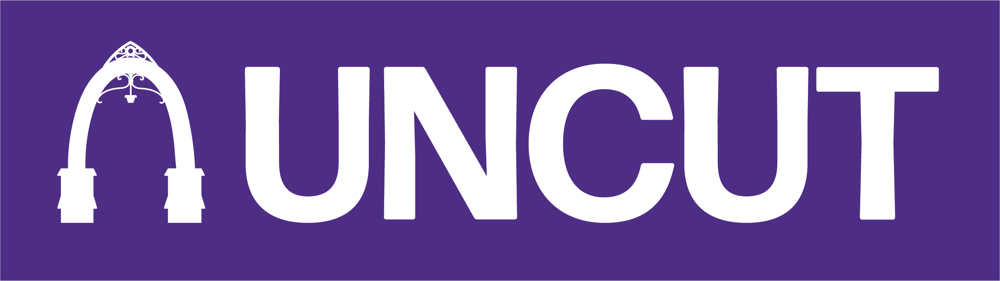
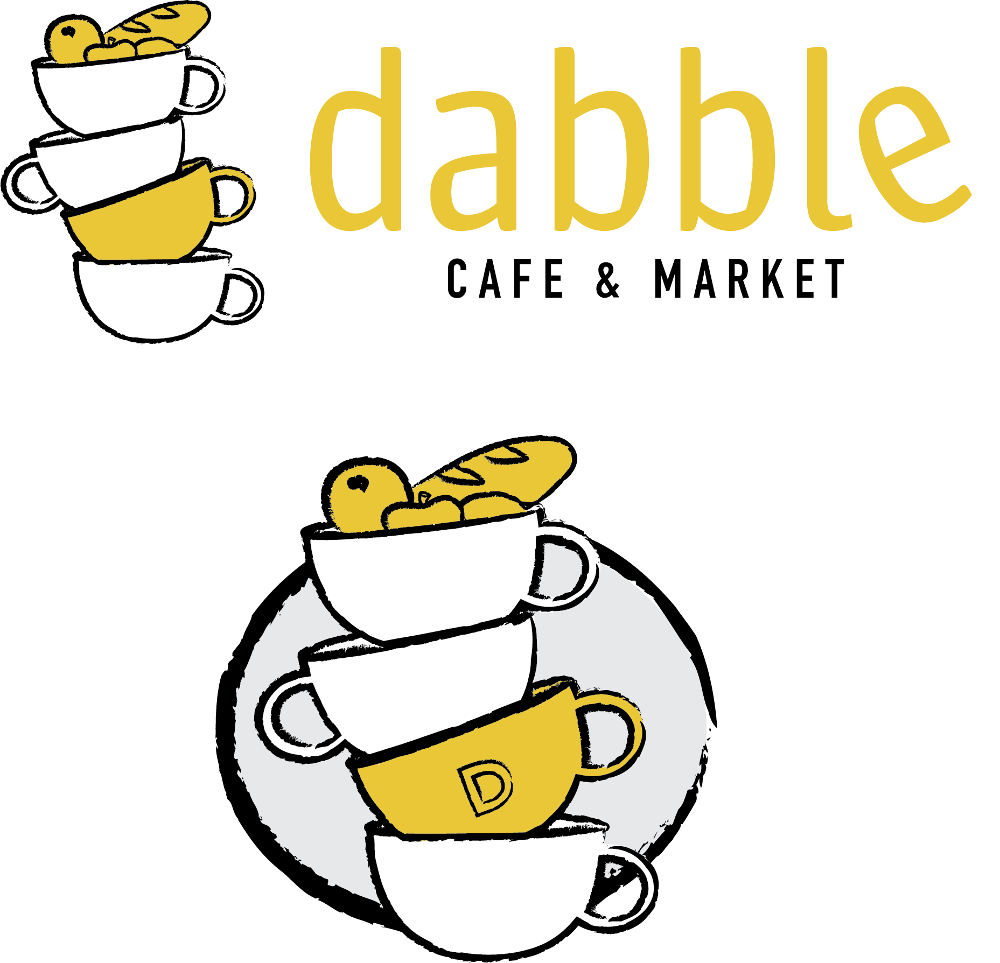
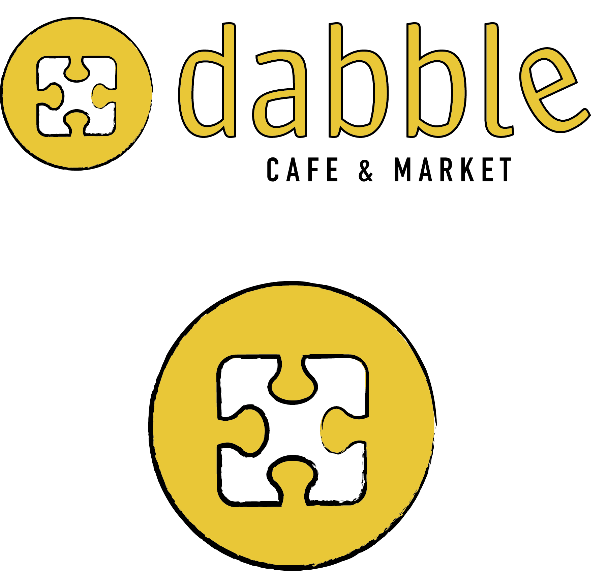

BRANDING
I've worked on a few projects at Northwestern to help with logo ideation and general branding. See these projects below!
UNCUT NORTHWESTERN
APRIL 2021 - IN PROGRESS
I recently joined a team of students here at Northwestern with the goal of bringing UNCUT to our campus--it's a media organization made for student-athletes to tell their stories. The organization was started at the University of North Carolina Chapel Hill and has spread to other campuses across the nation. I was brought onto the team to help with branding and graphic design as the organization looks to grow in both members and following on campus.
Because UNCUT Northwestern is a branch of the national UNCUT brand, there are certain guidelines I needed to follow when creating a logo. The other branches' logos are all simplistic, with the word "UNCUT" at the center with a line-art illustration of a prominent symbol of the campus surrounding it. Below are some of the other campus logos:
   With this style in mind, I began ideating. We wanted to use the arch, a core landmark on Northwestern's campus, as a feature of the logo. We also wanted to somehow incorporate the Northwestern N into the design as well. I used these ideas in my ideation and experimented with a few other ideas as well. I also thought it was important to have a strong alternate logo that was a bit simpler and could be used in graphics materials and as a watermark on photos. Below are the initial logo options I created.
After discussing with other members of the team, these are the most recent iterations of the UNCUT Northwestern logo. We decided that the arch was the strongest symbol we could use; I expanded the arch logo to show the entire structure and added more identifying detail to the simple silhouetted version. I also wanted to keep the basic logo with the Northwestern N incorporated into the word "UNCUT." From here, further discussion will be centered on which of these iterations to keep and which to discard in order to develop a strong brand identity.
  DABBLE CAFE & MARKET
MARCH 2021
In March, I briefly worked with a professor at Northwestern with creating logo ideas for a business she was starting: Dabble Cafe & Market. The idea is that Dabble will serve as an affordable source of nutritious food in a disinvested Chicago community, with rotating menus that feature different cultural dishes. Eventually, the business will employ and be passed along to members of the community.
To showcase the values of the business, I focused on symbols that represented connectedness and diversity--the cafe and market dabble in many cultures and foods, and the business itself serves to fill many purposes within the community. My client also wanted the color yellow to be included to convey brightness and optimism.
Below are my final logo options--I felt that the stacked cups represented the multiple facets of Dabble, with the bread and fruits included on top to include the market side of the business. The right logo is a center puzzle piece--a piece with the greatest amount of slots for other pieces to connect to. I felt that this also symbolized Dabble, as a goal of the business is to provide a solid foundation for the community to access healthy food and connect with other members.
 